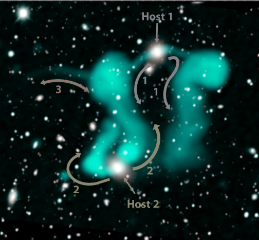
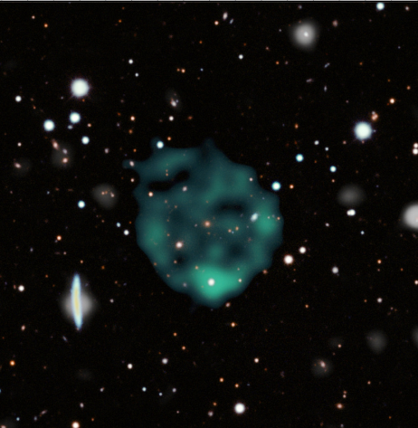

Radio telescope surveys have opened entirely new windows through which physicists study the universe. From studying the lightest of the dust to the massive Quasars, surveys in the radio wavelengths have been in use.
Last month Norris and collaborators published a paper on a recent radio survey they carried out with the Australian Square Kilometer Array Pathfinder
Dancing Ghosts
From figure 1, the most probable explanation is that the radio jets are in fact, coming out from the center of the two galaxies. When matter falls into the central black hole of a galaxy, it swirls around in form of an accretion disk. When the temperature of the disk gets extremely hot, a huge amount of gas is squirted out from the disk in a direction perpendicular to the galactic plane. The gas is capable of radiating in the radio wavelengths and we see them as radio jets. Figure 2 does a good job of explaining it.

But here’s the problem. In the second figure, we see the radio jets are being emitted in a preferred direction and in straight lines that can be traced back to the galactic center. Almost every radio jets that physicists observe has this unique pattern. However, in the case of the Dancing ghosts, both the radio lobes are bent and curved in shapes that are contrary to general observation. Based on current estimates, Norris and collaborators think that these radio jets have got bent due to a possible merger between the two galaxies. When the galaxies merged, the materials in the jets probably interacted with each other and resulted in this unnatural form. However, to have a more concrete explanation, we need a detailed analysis of these jets and also larger samples of such merging galaxies with radio jets.
Odd Radio Circles
The first question regarding the 4 odd radio circles detected was were they even real. Circular artifacts are common while dealing with contrast, however, when the same radio circles were detected by the second array of radio telescopes astronomers were confirm that these ORCs were indeed real.
The second question was were they even new. Such radio circles are very common in astronomy; we see them in rings around massive stars, supernova remnants, planetary nebula, gravitational lenses, and ring galaxies. In the original paper, the astronomers essentially ruled out every one of them by careful analysis.
Could the circles be supernova remnants? Well, no. This is because we tend to find these remnants within the dusty lanes of our galaxy. However, all of these circles were found way outside the galactic plane. Are these circles planetary nebulae? Well not again because the doppler shift measurement of these circles shows speeds of expansion that aren’t at all typical of planetary nebulae. These circles can’t even be rings around stars because their redshift measurements show that they are truly extragalactic.
Pictures from the survey show that central objects around the rings aren’t a common feature of the circles. This means that these objects can’t be gravitationally lensed. Usually, during gravitational lensing, there is a well visible central object that is responsible for bending light from a distant source.
So what are they? Well, as for now, no one really knows. All we know is that the team will have to go through an excruciating analysis of their data, tons of spectral analysis, and follow-up observations.